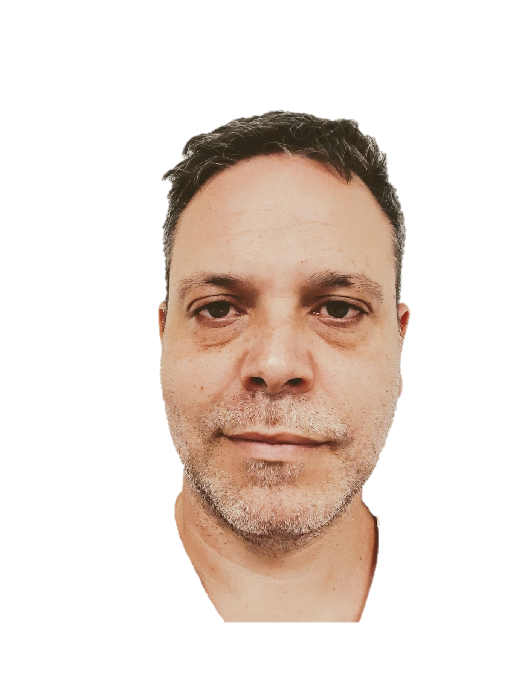

|  |
Javier BrytInfrastructure Project Managerat KyndrylAddress: San Martin 5, Ramat Gan Email: Jbryt79@gmail.com Phone: +972547831155 Contact me |
I’m an experienced project manager in the field of IT and multidisciplinary projects. My b.sc degree in engineering helped me think in an analytical approach, paying attention to small details and trying always to find a suitable methodology for each process. I’m also a team player with very high interpersonal skills who loves to have a positive impact in the company I work for.
| Relevant years | Work |
|---|---|
| 2016-Now |
Delivery Project ManagerIBM (Kyndryl from Sept 2021) |
| 2012-2016 |
Computerized System Validation Team LeaderComply LTD |
| Project Management | ⭐⭐⭐⭐⭐ | Linux | ⭐⭐⭐⭐ |
| Kubernetes | ⭐⭐⭐⭐ | Python | ⭐⭐⭐ |
| Azure | ⭐⭐⭐⭐ | Ansible | ⭐⭐⭐⭐ |
| DevOps | ⭐⭐⭐⭐ | Jira | ⭐⭐⭐ |